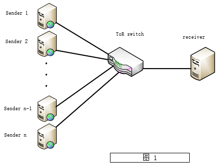
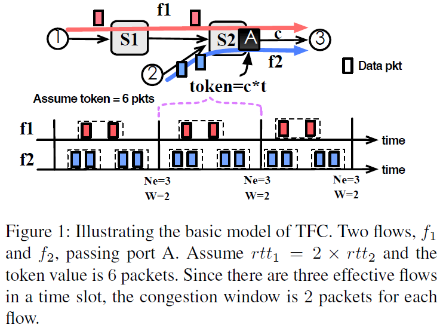
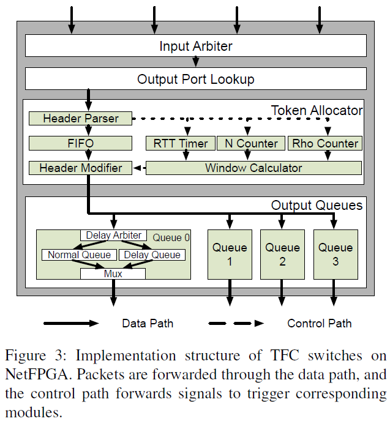

Token Flow Control (TFC)是为在数据中心网络中获得高带宽利用率，极低延迟，快速收敛，基本不丢包而提出的一种传输控制机制。
问题是什么
应用需求
现代数据中心网络对服务性能要求一直在增加。比如支持online数据处理的流计算对平均和尾延迟比一些像MapReduce这类的offline处理模式更加敏感；在memcachedsystems中，零包丢失是一个重要的性能刻画尺度，因为丢包后的重传会严重影响网络传输性能。
数据流自身特性
某些流的自身特性也导致了网络的低性能，比如short traffic bursts易导致网络拥塞和包丢失，致使flow completion time延长；highly concurrent flow也会带来网络拥塞，当并发高到一定程度，甚至会出现每条流的cwnd小到只有一个数据包这种情况； on-off pattern of flow transmission
不管是新的应用需求还是数据流自身特性对数据中心网路的性能要求都在日益增加。总的来说，就是要做到，fast convergence, zero packet loss, low latency。
为什么这个问题很重要和已有工作
Fast Convergence
在数据中心网络中，大约90%的流都是短流，短流一般只有几个数据包，所以为了减少flow completion time，传输协议使流快速的收敛到一个合适的共享带宽就很重要。现有的TCP及其TCP变体都是先经过慢启动，然后到达threshold，进入拥塞避免，对这种短流响应太慢，可能这些流还没收敛到公平共享带宽就已经结束了。
还有一个问题是有些流（silent flow）是间歇性的传输数据，在他们不传输数据的这个时间段内，但它们占据着带宽，致使带宽利用不充分。传输协议$D^{3}$虽然可以快速的收敛到一个合适的速率，但无法解决这种silent flow问题。
Zero Packet Loss
在大规模数据中心网络中，TCP遭受的问题有TCP Incast, TCP outcast, long query completion time, out-of-order等。Long query completion time and out-of-order就不介绍了，这里解释一下什么是TCP Incast and TCP outcast:
TCP Incast: TCP Incast是指多个机器的大量TCP连接集中连接到一个机器，导致压力集中到某一个交换机，交换机的buffer很快用光，然后出现大规模的丢包事件，如图1所示。有兴趣的可以看看专门研究TCP Incast问题的paper。在blog后面会列出相关的paper。

TCP outcast: TCP outcast
Low Latency
高延迟直接对一些云服务提供商的利润造成负面影响，许多云服务商采用分布式实时计算系统，例如Storm，网络时延是计算框架中整个时延的大头。还有一些web services，例如facebook，都要求极低延迟。而在数据中心网络中，round trip delay一般很小，通常在hundred microseonds级别，而queueing delay很大，要比round trip delay高出几个数量级，可以达到hundred milliseconds级别。
TFC的设计
在TFC的设计模型中，有两个量很重要，分别是Token和the Number of Effective Flows：
Token T[n]. T[n] represents how many data can be transmited by a link in time slot n(n = 0, 1, …). T[n] can be computed as $c*t$, where c is the link bandwidth and t is the duration of a time slot.
Number of effective flows E[n]. E[n] stands for the number of full windows of data packets injected by all the passing flows in time slot n.
之所以要计算有效流数，是因为有些流是间歇性的传输数据，所以间歇期时间要被剔除。还有一点要说明的是，这里的有效流，根据原文的解释，应该是在时间段$t$内，满发送窗口的个数。下面给出了$E[n]$的计算公式；
$$E[n] = \sum_{f} \frac{t}{rtt_f} \quad (1)$$
表达式（1）中的$t$是指持续时间长度，$rtt_f$表示流f的$rtt$，这样算是因为，一个$rtt$可以发送一个满窗口的数据包。
$$W[n+1] = \frac{T[n]}{E[n]} \quad (2)$$
知道了满窗口的个数和总共发送了多少数据包，当然就知道了拥塞窗口的大小。
下图是一个计算例子：

Measuring the Number of Effective Flows
精确的知道有效流数有以下几个方法。方法一每条流可以在每个回合发送一个额外特殊的数据包，switches只需要测量在时间段$n$内收到的特殊数据包数就可以知道有效流的个数，但这种方法引入的开销太大。方法二在时间段$n$内的有效流数$E[n]$可以通过等式$\frac{A[n]}{W[n-1]}$得到，但是这个$W[n-1]$是上一个时间段得到的，除非bottleneck switch在上一个时间段记录的拥塞窗口值一直到当前都保持不变。
TFC在这里通过在每个回合标记一个数据包来告诉switch有效流数，而不是发送一个额外的数据包。这样，switch只需要数被标记过的数据包就可以知道有效流数了。
Duration of a Time Slot
理论上这个时间长度可以是任意值但是，在实际环境中，考虑到收敛速度，计算有效流的精确性，还是需要确定一个合适的值。一方面呢，这个值不能太大，如果太大，switchs就不能即时的通过得到的有效流数更新拥塞窗口，以至于无法做到快速收敛。也不能太小，如果太小，这样计数的有效流数就会太小，就会得到一很大的拥塞窗口值，导致不准确。一般选择某条流的$rtt$作为基准，根据经验，在数据中心网络中,流与流之间的$rtt$相差不超过3倍。
Achieving Rare Packets Loss
当并发流的数量足够大，即时每条流只发一个数据包，也会出现拥塞，然而这种情形在数据中心网络中还比较普遍。一个比较常见的方法就是改变MSS的大小，这样一来，每个数据包中，包头占的比重就会增加，带宽利用率因此会下降。另外一个方法就是延迟发送时间，每$\frac{MSS}{W}$个$RTT$发送一个数据包。这样的话就需要精确的测量$RTT$，以及一个高分辨率的计时器来计数$\frac{RTT}{W}$,然而采用高分辨率定时器会引入大量的中断，产生额外的负载，如频繁地打乱处理器高速缓存并增加耗电。
每一个switch都有了一个counter来记录还可以发送多少数据包，这个计数器会随着时间而增加。当一个ACK到达时switch时，如果它携带的拥塞窗口小于一个包大小，但是switch的counter记录的可发送的值大于一个数据包，那么，switch会将ACK头部的拥塞窗口值修改为一个数据包大小，然后，counter减1；如果counter小于1，那么这个ACK会被放入到一个delay queue中，等到counter大于1了，再做处理。还有如果ACK通报给sender的拥塞窗口值本身就大于一个数据包，那么ACK会直接被转发，counter减1。
实现
实施TFC算法呢需要修改数据包头和拥塞控制机制，包头呢，主要是动用了TCP头的保留位中的两位，分别叫做RM(Round MArk)和RMA(Round MArk Acknowledgment)，用来打标记方便switch计算有效流数；对拥塞控制机制的修改已经在前面说过了。
关于RM和RMA的使用，需要提出一点疑问，原文中是这样描述的：
During the establishment phase, the sender and receiver negotiate
whether to use TFC or not. Then at the data transmission
phase, the sender sets the RM bit in the TFC header
of the first data packet to 1. After receiving a RMA marked
packet, the sender sets the RM bit in the TFC header of the
next sending data packet to 1.
想法是挺好的，但是，万一这个带有标记的数据包丢了怎么办，paper没有给出说明。如果丢了，paper中对有效流的计数将无法实现。
要实现TFC的功能，switch需要做三件事，computing tokens, measuring the number of effective flows and updating congestion windows。这些功能都在上面介绍过了，这里就不多说了。实现结构图如下图示：

参考文献：
TFC: Token Flow Control in Data Center Networks
ICTCP: Incast Congestion Control for TCP in Data-Center Networks
The TCP Outcast Problem: Exposing Unfairness in Data Center Networks